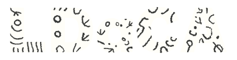

LDaCA Online Workshop · Session 2 of 2
Coding text with GenAI: hands-on
The Annotation tool in LDaCA Wordflow · keyboards required, mistakes encouraged
Dr Chao Sun · Sydney Informatics Hub
Friday 28 August 2026 · 2:00 – 3:30 pm AEST (12:00 – 1:30 pm AWST) · this session is not recorded


Acknowledgement of Country
We acknowledge the Gadigal people of the Eora Nation, the Traditional Custodians of the land from which we present today, and the Traditional Custodians of the many lands from which you are joining.
We pay our respects to Elders past and present.
Before we start: 3 checks
- Wordflow is running: desktop app (v0.7.x) or Binder. Not yet?
sih.tools/wordflow. Install takes ~5 minutes; follow on the shared screen meanwhile. - Model access is provided in this session: a shared workshop key lands in the chat when we need it (deleted at 3:30 pm). Your own OpenRouter / OpenAI / Anthropic / Google key works too, if you prefer.
- The hands-on sheet is open: every step from this session, in order, with exact button names. Link in the chat now.
Just joining for the afternoon? Perfect. This session stands alone. The morning's recording covers the wider tour of Wordflow.
The idea, honestly
An LLM can code your text. Should it?
The promise
Classify thousands of texts against your categories in minutes: stance, topic, tone, anything you can define in words. No training data, no coding scripts.
The pitfalls
Confidently wrong labels · inconsistent on edge cases · biased where language is biased · drifts when the prompt is vague · and it never says "I'm not sure" unless you give it that option.
Today isn't "trust the AI"; it's how to check it. Every pitfall above has a control you'll use within the hour.
The method
Treat the AI like a new coder on your team.
- Codebook: define the categories in writing, like instructions to a new research assistant.
- Pilot: let it code a small sample first. Never the whole dataset on faith.
- Measure agreement: compare against a reference: a human-verified annotation coded to the same codebook, or another coder. Intercoder reliability (Cohen's κ), confusion matrix.
- Revise: sharpen the codebook and prompt where the disagreements pile up. Re-pilot.
- Document: prompt, codebook, model, agreement scores → your methods section.
A coder earns trust through agreement, human or machine.
Before you dive in
Choosing an AI provider is a research decision.
Today we use shared OpenRouter access so everyone can do the exercise. That is convenience, not an endorsement of OpenRouter or of any commercial AI service for research use.
Ethics approval
Which providers and models are permitted, and whether your data may be sent to an external service at all, is set by your approval, not by the tool.
Data privacy
Coding sends your texts to the provider. Sensitive or unpublished data may not belong there; local models keep everything on your machine.
Fit for the question
Match the model to your task, language, and data. Pilot and measure; never assume.
Cost & accountability
Budget for full-corpus runs, and document model, prompt, codebook, and agreement. The coding in your outputs stays your responsibility.
The hands-on, in one slide
- Create a workspace, import the sample data: ADO — Queensland Election Tweets.
- Explore: the Frequency word cloud says the campaign is about jobs. Two filters (drop retweets, keep "job") → everyone has the same 226 tweets.
- Join the reference annotation: human-verified labels for all 226 tweets, onto your block. Then the codebook:
promise/cuts/other, and code a few tweets yourself to feel the task. - Connect a model: shared workshop key from the chat → new column
theme.ai. - Preview → Compare To → confusion matrix: measure the AI against the reference annotation, then improve it: revise the codebook, feed corrected rows back as examples (few-shot), and watch κ move.
- Run All: 226 tweets coded, with the numbers to trust them. Then: cleverer questions, same tool.
If you fall behind
Checkpoints: rejoin in under a minute.
- Download the latest checkpoint file from the link in the chat (a
.zipworkspace archive). - Data Loader → Workspace manager → Upload workspace → choose the file.
- Click Load on the newly listed workspace.
- Back in the Annotation tool: re-select the data block / column if a selector shows empty; everything else (data, tabs, results) is restored.
Your API key isn't touched: provider settings live on your machine, not in the workspace file. Use a checkpoint whenever it helps: they exist so you can spend your time on the interesting parts.
Take it home
- Today ran on a shared workshop key, which is now gone. For real research: your own API key (the setup is identical to what you just did), or a local model: Add Provider → Custom points Wordflow at a local server (Ollama, LM Studio; anything speaking the OpenAI API), so your data never leaves your machine.
- Check your ethics approval before coding real data with AI. Which models, which providers, and whether data may be sent to an external API at all: that's your approval's call, not the tool's.
- Keep the loop: codebook → pilot → agreement → revise → document. Prompt, codebook, model and κ belong in your methods section.
- No AI required: it's a manual coding tool too. A team of human coders can each code their own column, and the same Compare To measures intercoder reliability between your target column and multiple reference columns: percent agreement, Cohen's κ, or Krippendorff's α, plus the confusion matrix.
- Keep Wordflow:
sih.tools/wordflow. It's under active development: tap the in-app Feedback button whenever anything breaks or puzzles you. The app checks for new releases itself; updating to the latest version is one click. Cite via the sidebar's quote icon (“Cite LDaCA Wordflow”).
Data: Bruns, A.; Angus, D.; Cohen, T.; QUT Digital Observatory (2022). Queensland Election 2020 on Twitter. QUT. doi.org/10.25912/RDF_1665115527020 · Gender metadata: Sydney Corpus Lab.